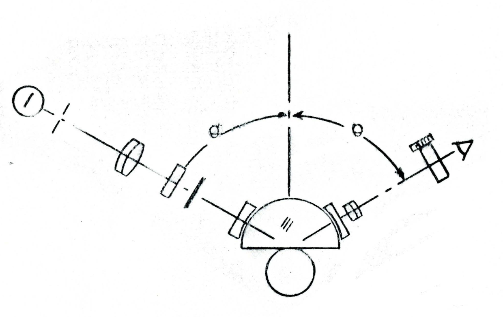

Curious Robot Children
Logline: Toddlers use all their senses to experience things that interest them, creating self-directed, well-organized data. Allowing AI to have bodies, curiosity and intention may make training new AI much easier and quicker.
Original talk: "Coherence statistics, self-generated experience and why young humans are much smarter than current AI". Linda Smith, Indiana University [Neurips 2023]. [Lab Website]
Accessible summary: Door summary slides [under construction]
Creative responses:
- [ --- ]
Image Credit: "Frustrated Total Reflection: Its Application to Proximity Problems in Metrology"